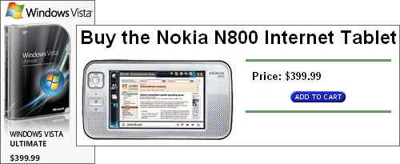
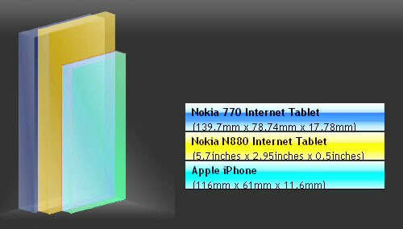

Long, “OK, we got it wrong last time” review at C|NET
of the Nokia N800 Internet Tablet. Well, not exactly, but at least an
“OK, we’re coming at this carryaround category from a different
perspective this time and that changes things a lot” acknowledgement.
Categories: Internet tablet, Nokia N800 and observations
Not
ten minutes before the Fedex truck arrived bearing an N800 for my
delectation*, I read the wire-service story about Windows Vista,
available for sale via download at various prices topping out at $399.
Let’s see . . . quick visit to Compusa . . . hm-m. Yup. $399.99 for
Vista Ultimate, $399.99 for Nokia N800 Internet Tablet. Gee, this is a
hard decision. Lay out $399.99 for one heckuva OS, or instead get the
Linux OS, plus an entire computer thrown in for free. Decisions,
decisions!

* but just on loan, to be returned after an off-the-cuff round of testing (my specialty).
Mobile magazine points
to a promotional video for the Nokia N800 Internet Tablet made by
Nokia. Neat! (Hm-m. Guess they’re following up on TechEBlog’s report.) But, hey! watch it! Very clever visualizations of the concepts incorporated on the device.
Categories: Internet tablet, Nokia N800, observations and phone
There’s nothing outside the standard press release info in the brief writeup on the Nokia N800 Internet Tablet at the New York Times
today. But I think the article is worth noting, if only for its
headline: “Take an Internet Call or Some Notes, or Just Doodle”.
Well, there is the power of marketing too. Here’s the lede: “You
can’t put the world in your pocket but you can put the Web there ….”
Yes, the idea of accessing the internet while untethered from your
desktop or laptop is fully insinuating itself into the Zeitgeist. As is
the notion of using one’s WiFi carryaround to take (or make) phone
calls obviously, based on this headline. (If only Ivan Berger, esteemed
audio writer* and avid reader, knew how apt his opening sentence’s
comparison of the N800 to a paperback book really is! Hopefully he’ll
get to try FBReader soon.)
I think the day is nearly over when people wonder why someone would
buy an internet tablet instead of (hm-m, let’s see … ) a UMPC, a PSP,
an OQO, a myLo, a LifeDrive or even an iPhone. And that’s the news I
see in the Times’ brief.
* Full disclosure: Twenty years ago, Ivan and I were
colleagues at CBS. Not only do I admire his writing and his brain, I
like him personally. Ivan was one of the first to see the real
potential in microcomputers. He was such an early adopter that the
Smithsonian gratefully accepted the donation of his first small
computer, an original Altair 8800b.
Categories: Google Talk, IM, Internet tablet, Nokia N800, phone and video
In the blitz about the new Nokia N800 Internet Tablet, one thing that seems to be underplayed in my opinion is Nokia-Skype collaboration to “develop a new mobile experience.”
With the N800, Skype frees itself from desktops and laptops. Now Skype is mobile, like any cellphone.
With Skype, the Internet Tablet acquires real phone capabilities,
able to connect not just to millions of Skype users’ computers but to
any phone.
But beyond that, you have video with your conversation. And not at
the sky-high cellular carrier prices but at the opposite end of the
price spectrum where VoIP and Linux and the internet in general are
camped.
See, for instance, Festoon,
where there are Skype and Google Talk video plugins. Up to 8 callers
with cameras can participate in a Skype video conference with Festoon
without bankrupting themselves. Who knows? I expect Nokia-Skype will
have its own video plugin by the time the collaboration comes to
fruition in six months, don’t you? With all the software comfortably
built-in, of course.
So the N800’s webcam and WiFi and mobility make Skype limitless. And
Skype makes the N800 a true two-way communication device, where the
walkaround web meets the talk-all-day crowd. What a combo!
Categories: Internet tablet, Nokia 770, Nokia N800, phone and software

CES
saw the long-rumored appearance of Apple’s convergent device, the
keyless phone that runs OS X. As you can see from this size comparison
supplied by Sizeasy (thanks, engadget!), the iPhone is nearly as large as the Nokia N800 Internet Tablet.
For the last 18 months, we’ve been saying that not every person
wants the identical thing from their tablet, and that different vendors
would emphasize different aspects as they entered this device zone. The
UMPC went for traditional computer features (hard disk drive, Windows
operating system), Sony for a proprietary marketing model for e-books
and slideout keyboard for its Mylo. And Apple chooses cellphone and
camera as its prime features.
Nokia long ago gave highest priority to size, weight, cost and
internetability when designing its internet tablets, making possible
the walkaround web. If you keep the cost below $400, make the screen
800 pixels wide and need to carry it in a pocket, well, your device
can’t also include a cellphone, 2MB camera, hard disk drive, keyboard,
Windows, and so on and so on.
With this announcement, Apple officially retired
the word “Computer” from its name. iPods and iPhones aren’t computers
and that’s where Apple is positioned. But its computer orientation is
what enabled Apple to blow off the cellphone OS approach and put its
own Unix-rooted OS X into the iPhone. Think Steve Jobs isn’t prepared
for really, really rapid advance in capabilities for the pocket
communicator?
Perhaps the most reassuring part of Apple’s approach for the Nokians
is Jobs’ determination to have it his way. So, as others have noted,
the iPhone isn’t a smart phone, onto which you can plunk your own
applications to make the device ever more your own. No, you’ll get only
what Steve permits you (which is still more expansive than Sony or
Microsoft, come to think of it).
It’s only Nokia that says, yes, the CPU in your pocket should do
everything you want, and every user is going
to want a unique blend of capabilities. And most of those are going to
be software-based. And that door is wide open. Maybe Ari Jaaksi and his
crew chose this path for other reasons. But as of now, Nokia seems to
be the only vendor willing to grow the carryaround device in
conjunction with its customers and who isn’t anticipating fleecing them.
Welcome to convergence, Apple! Better fasten your seat belts. It looks to be a very bumpy ride because of the speed!
* * *
Update: The report at Good Morning, Silicon Valley!
included an analyst’s saying he thought sales of 10 million iPhones
this year was low. I’ve just got to believe that kind of heat will
transfer to the N800 as people wrap their heads around this concept of
a small, keyless, great-screen carryaround computer.
The iPhone breaks two basic axioms of consumer
technology. One, when you take an application and put it on a phone,
that application must be reduced to a crippled and annoying version of
itself. Two, when you take two devices — such as an iPod and a phone —
and squish them into one, both devices must necessarily become lamer
versions of themselves. The iPhone is a phone, an iPod, and a
mini-Internet computer all at once … without taking a hit in
performance. In a way iPhone is the wrong name for it. It’s a handheld
computing platform that just happens to contain a phone.
Right on, Lev!
* * *
Added later: So why does it matter that the iPhone is nearly as big as the N800? Two reasons:
People get used to the size/form factor. Plus you know
imitation phones will come out, enlarging the pool of devices this
size. The more devices there are, the less odd the Internet Tablets
seem to those who need help understanding why they’re so great.
Apple’s going to match the 800×480 resolution. They may be
able to squeeze in the screen in the current size or maybe the next
model is slightly bigger. But a single derogatory comment — “I’d rather
surf on a UMPC” (also 800×480) — and Jobs will make it happen. Then the
Internet Tablet will need something other than price to make it stand
apart.
Categories: Internet tablet, Nokia 770, Nokia N800 and phone
Waiting for the news to break officially and musing …
The New York Times ran an article today entitled “A Personal Computer to Carry in a Pocket.” Even though it carries a photo of four OQO founders, the story is really more about cellphones and specifically about tomorrow’s likely appearance of an Apple phone.
But the key takeaway from the article, I think, is John Markoff’s statement that “the newest screen is evolving to adopt more and more characteristics of a personal computer.”
That is clearly the space where the Nokia Internet Tablets (770 and N800) fit. And notice the emphasis on screen as opposed to computer. How often should the 225-pixel-per-inch, 800-pixel-wide screen be mentioned in regards to the Nokia siblings?
Of course, because it’s an article about a cellphone, Markoff’s next statement concerns “the convergence of many forms of communication encompassing voice, e-mail, instant messaging and video telephony.” This is the cellphone take on the world. Note how different that is from Nokia’s emphasis on communication as beginning with web surfing and including streaming audio and video.
The internet tablet is very handy for looking at a webpage away from the desktop or laptop. But ubiquitous WiFi isn’t here, and without it the walkaround web requires a cellphone with a data plan. Without WiFi or data plan, the internet tablet is merely an amusement in your pocket out of the house.
I don’t know if our European cousins are aware of it, but the the U.S. carriers offer only two data-plan price points — outrageous and extortionate. To report, as Markoff does, that “the data revenue for American cellular carriers grew at an annual rate of more than 70 percent in the first half of last year” is one way of saying “prices have been so high that users have declined data plans so far, so even tiny cultural shifts requiring a few more users to move data over phone lines has resulted in vast increases in revenue.”
Markoff alludes to the internet tablets when he reports:
The coming convergence — or possibly collision — between cellphones and desktop computers is also yielding new forms of hybrid devices. Nokia and Sony have recently introduced hand-helds with innovative physical designs and new combinations of communication features.
What they share is designs that make them more portable than laptop computers and screens that are more readable than those on cellphones.
Of course, the cellphone market is vastly larger than the carryaround computer market, meaning there are more users to migrate from a $400 phone to a $400 tablet than from an $800 laptop or notebook. (Would that the market had taught cellular carriers to compete rather than simply to lobby harder!) So I predict we’ll see lots and lots of advertisements aimed at pretending cellphones can do all the interesting things you want to do on a computer.
And, you know, it’s going to be a lot easier to put on a Bluetooth headset and use the internet tablet as a phone than it will be to get all that “communication” you want out of an eentsy-weentsy cellphone screen.
“Pretty
soon, we’re going to need a name for devices that are not wirelessly
connected. They’ll be museum pieces, relics, ‘old-school,’ phone
classic.”
The
need to incorporate a camera into an Internet Tablet seemed off-base to
me. If Nokia expects the PIM applications to be in the cellphone and
hence inutile in the Nokia 770, surely the same logic applies to a
camera. But the new Nokia 870 (?) Internet Tablet seems clearly to have
a camera.
Reading Engadget
today, however, I see the camera referred to as a webcam, and it all
makes sense now. A built-in webcam is definitely walkaround web. That’s
just where the Internet Tablet fits.
Categories: Internet tablet, Nokia 770 and e-books
DotReader from Osoft has entered the public beta stage. You can download Windows and Linux versions. This is an open-source ebook reader (source code here), written in Perl with the wxWidgets GUI.
I’m partial to FBReader, but I really like the idea of another Linux ebook reader.
I’ll report back what I learn about dotReader as I work with it. My
question to the Nokia 770 community is whether dotReader’s use of
wxWidgets might make it an unfriendly or large application on the 770.